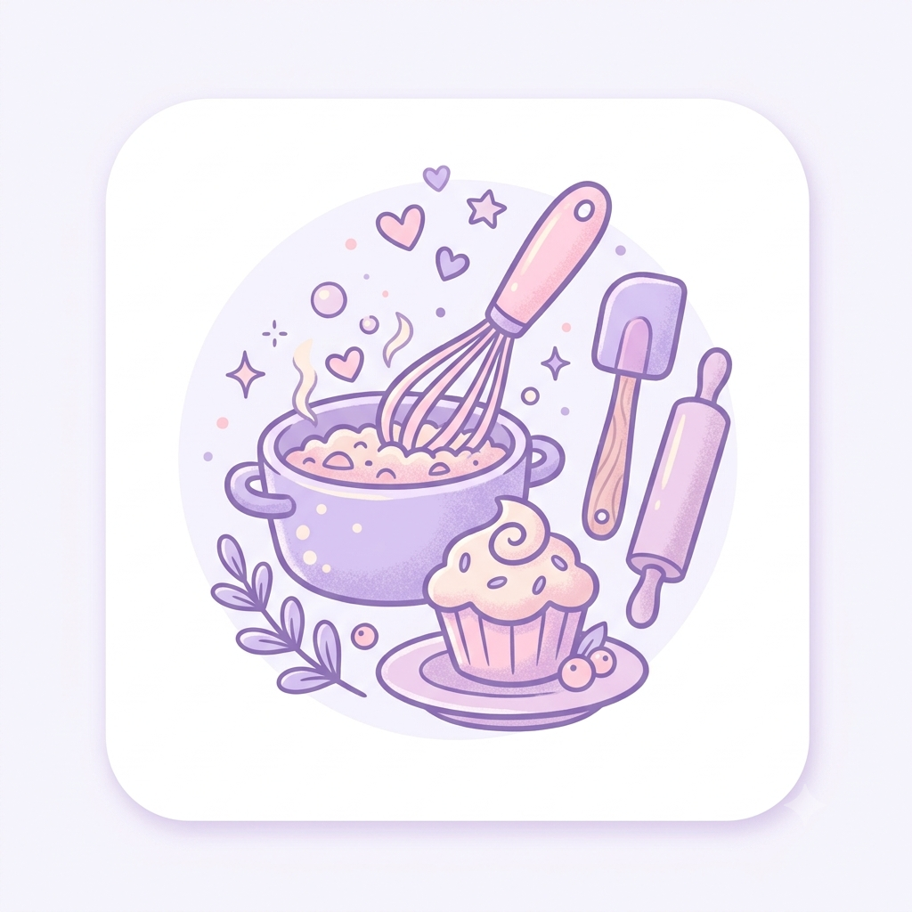

Sobre a culinaria
Vou compartilhar meus conhecimentos sobre a culinaria
Meu primeiro post
Por: Mariah Madalena
p>Bem-vindos ao meu compartilhamento sobre a culinaria aqui vou falar sobre a culinaria e suas curiosidades

Vou compartilhar meus conhecimentos sobre a culinaria
Por: Mariah Madalena
p>Bem-vindos ao meu compartilhamento sobre a culinaria aqui vou falar sobre a culinaria e suas curiosidades